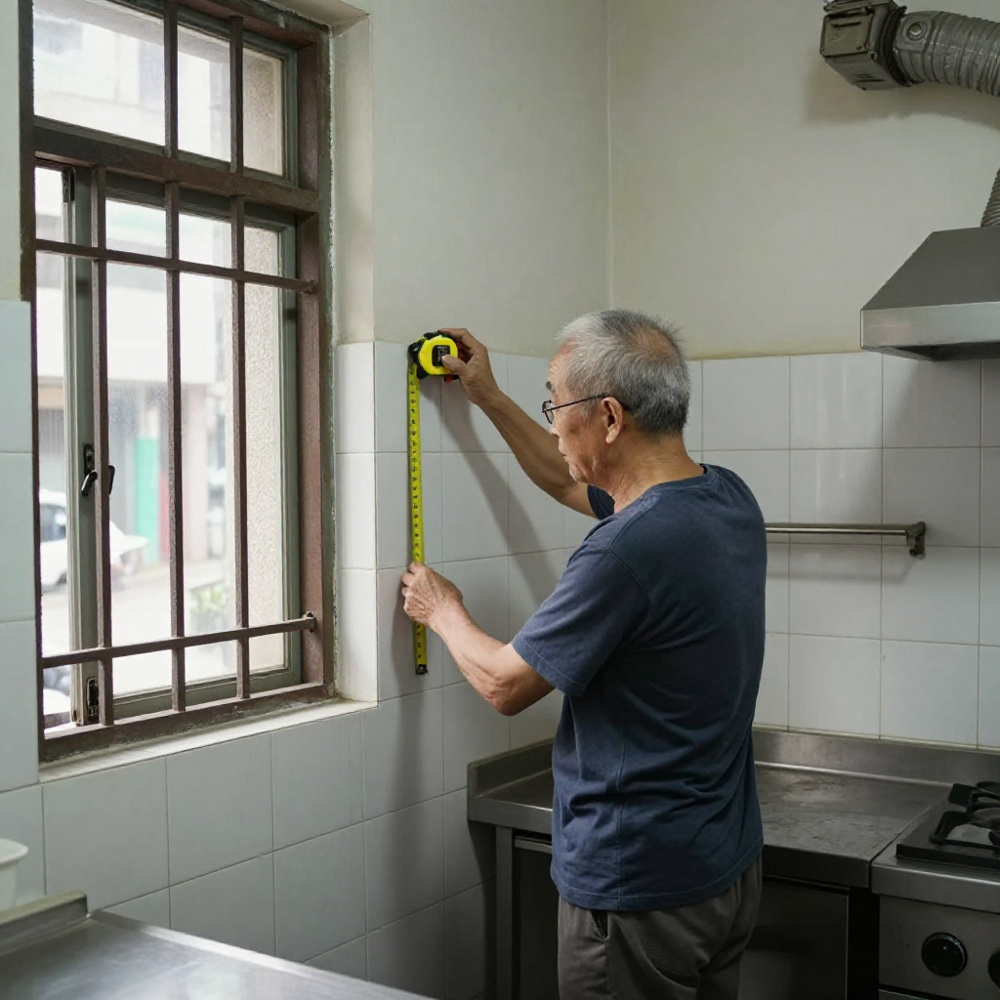
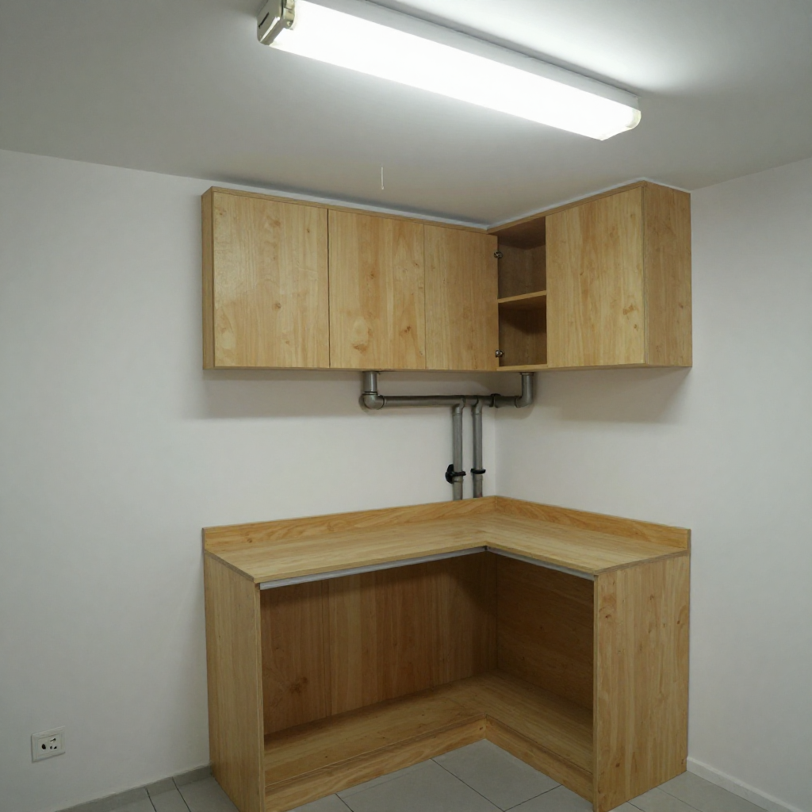
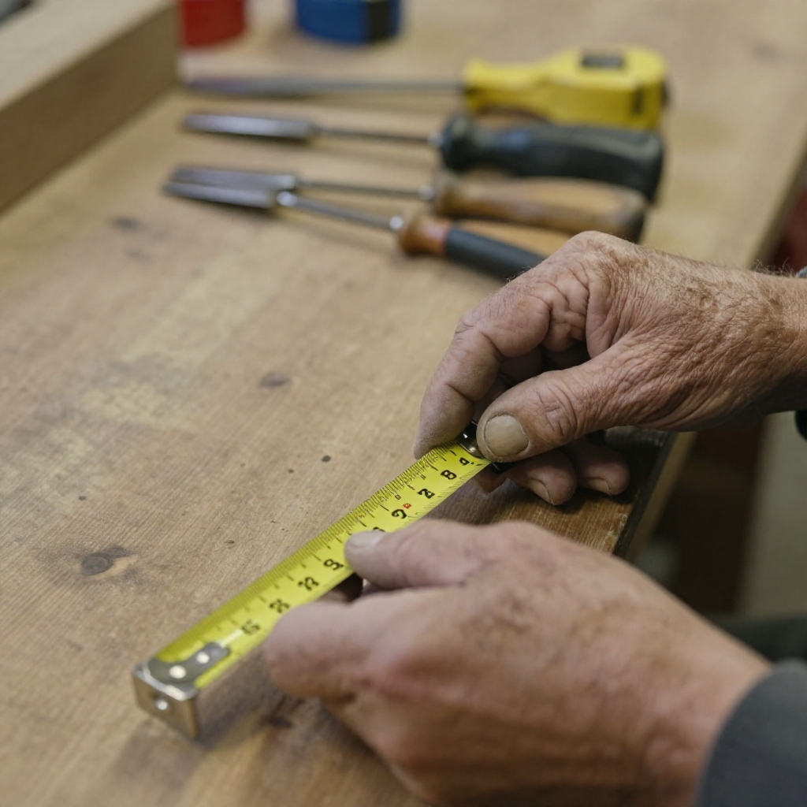
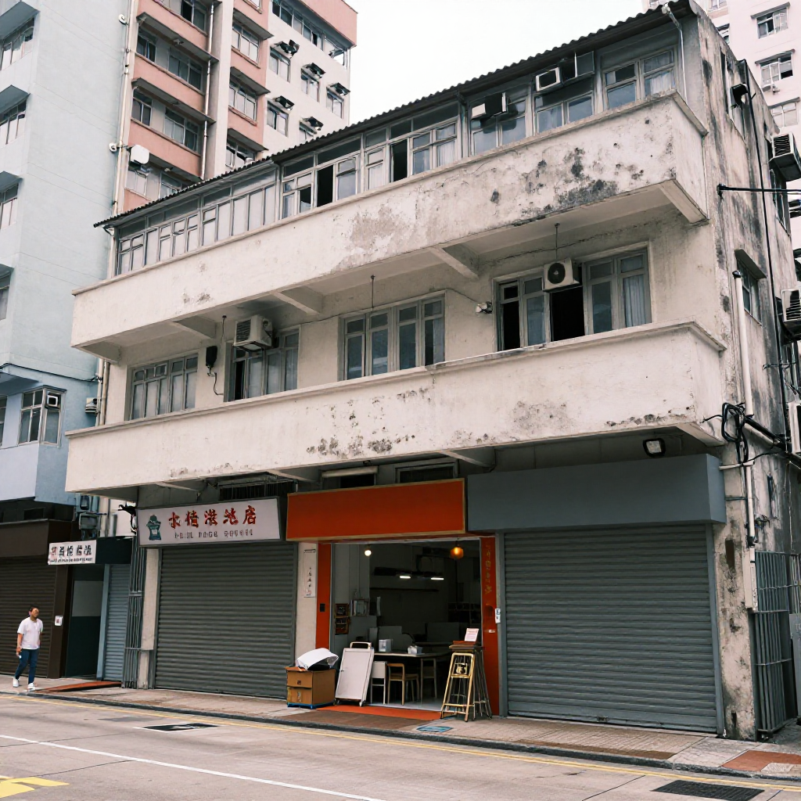
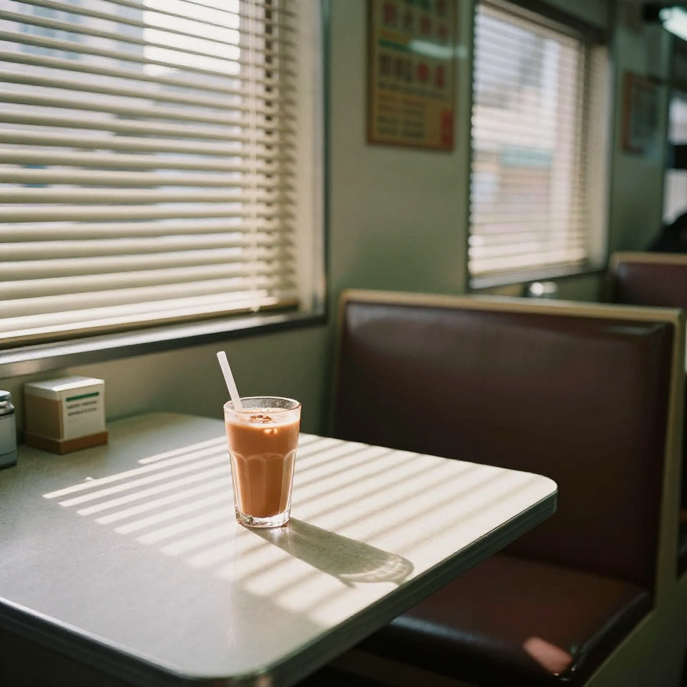

老行尊话当年：经济差也要守住手艺

📍 場景：土瓜灣舊樓單位廚房｜主訪：老行尊權叔（林永權，四十年室內裝修）｜記錄：張丹楓｜整理：雲蕾｜日期：2026 年 9 月 24 日｜同行：徒弟阿傑｜WhatsApp 報價：852 5190 2328
序幕：朝早八點半嗰個廚房角落
朝早八點半，土瓜灣一個舊樓單位裡，權叔已經換好工作服，蹲喺廚房角落度度尺。佢對面個後生仔叫阿傑，係佢徒弟，跟咗兩年。
我同雲蕾企喺門口睇。今日我哋唔係嚟開工，係嚟跟權叔學嘢——權叔一九八五年出道，今年七十二歲，做室內裝修已經四十年。喺香港呢行，人稱「權叔」。
「師傅，個客人話廚房要做L形，但係有師傅話做唔到、話要拆牆，我點算？」阿傑皺住眉。
權叔冇即刻答，企起身，帶阿傑行去窗口位置，指住外面：「你望下，外面條街有幾多間吉舖？裝修工程少咗，個個都話冇嘢做。」佢又蹲低，反覆摸吓個牆角，「但係你睇呢個牆——唔係主力牆，我哋唔使拆，做L形櫥櫃就係就住管道位，根本唔使大興土木。」
雲蕾喺記事簿寫低第一句：「唔係主力牆，就唔使拆——度尺先，落鎚後。」

第一幕：唔好掛住接單，要掛住點做
阿傑跟咗權叔兩年，最大感受就係師傅乜都慢慢嚟。
「師傅，你唔怕客人嫌我哋慢咩？有啲師傅一個禮拜起貨，我哋成日話要度尺、睇位。」
「我哋做係慢，但我唔想客人後悔。香港呢個地方，樓價貴、間格細，每一尺都要諗清楚。你話客人想要北歐風，我首先要問：你間屋係朝早光定下晝光？光幾個鐘？廚房係你主用定係公家？如果唔問清楚，跟風整幾張相片就話係北歐風，客人搬入去發現唔對路，嗰個先係真正嘅慢。」
佢舉起手，指節上面有深淺唔同嘅刀痕：「你睇吓啲舊傷，年輕嗰陣唔小心，𠝹親手指以為小事，點知發炎成個月。我而家成日同後生講——安全係基本，手藝係尊嚴。」
我問權叔：「權叔，你呢句『手藝係尊嚴』，係邊個教你㗎？」
「我師父。當年佢帶我去西灣河一間舊唐樓，個客人係船員，一年只有三個月喺香港，裝修預算極低，但要求極高。師父話：你幫呢家人裝修，唔好當係一單生意，當係幫佢起一個佢哋可以安心返嚟嘅地方。呢句說話，我記咗四十年。」

第二幕：行業寒冬，各有睇法
行入行出都知，今年裝修工程少咗，街上面吉舖多咗。我問權叔，呢行嘅老行尊點睇。
「有人轉去做裝修設計，有人轉做維修，有人就索性退休。但我守住呢個舖位，因為我仲記得師父點樣教我——你唔係做裝修，你係幫人起家。」
雲蕾問：「權叔，咁你驚唔驚冇單開？」
「驚就唔使開舖啦。但我守住條底線——做得一單就係一單，唔會用低價爛做去換工作量。低價搶返嚟嘅單，料要慳、工要趕，最後爛尾，害咗客人，又害咗自己個名。個名爛咗，幾十年都執唔返。」
阿傑喺旁邊細聲同我講：「我身邊好多師兄弟都轉行——外賣、倉務、司機，邊個都話裝修辛苦又搵唔到食。」
「香港人係咁㗎啦，邊個行業辛苦就話冇前途。但你問吓啲客人——佢哋最想搵係乜嘢師傅？係可靠、準時、做得靚嘅師傅。你今日學識睇牆身係咪主力牆，知道管道位點處理，明白香港納米樓嘅空間邏輯——呢啲嘢，十年都未必學得齊。」

第三幕：下午茶嗰杯熱奶茶
下午三點，工人陸續收工，權叔照例去茶餐廳食個下午茶。伙記見到佢就自動自覺整咗杯熱奶茶。
「權叔，最近點呀？」
「照舊啦，死唔去。」權叔笑住答。
伙記話佢最近想裝修間屋，但係驚搵到唔老實嘅師傅。權叔話：「你就搵有口碑嘅，唔好淨係睇價錢。真正好師傅唔靠呃，佢靠嘅係你介紹我、我介紹你，口碑傳落去。」
呢個就係香港裝修師傅嘅生存之道——唔靠宣傳，靠手勢；唔靠低價，靠信用。
起身離開之際，權叔回頭望一望自己間舖，牆上面掛住師父當年送俾佢嘅一幅字：「踏實做事，良心做人。」
「師傅，寫得幾好。」
「係呀，但係最難係做到。」權叔慢慢行出去，聲音低低咁話。

尾聲：幫人起家
返屋企嘅地鐵上，雲蕾問我：「丹楓，今日跟權叔一日，你學到乜？」
我諗咗陣：「三樣嘢。第一，度尺先、落鎚後——唔係主力牆就唔拆，管道位就住做，唔好動不動就大興土木。第二，做得一單就係一單——唔用低價爛做換工作量，個名爛咗幾十年執唔返。第三，你唔係做裝修，你係幫人起家——客人俾間屋你，係信你，你要對得住呢份信。」
雲蕾寫低：「權叔三句：度尺先落鎚後、一單就一單、幫人起家。」
我諗起大埔林伯嗰棟樓、油塘陳伯嗰個櫃、屯門簡屋嗰個鞋櫃——每一間屋背後都係一家人，佢哋唔係要一單裝修，佢哋要一個可以安心返去嘅地方。
搭地鐵返屋企，我特登用八達通拍正價出閘。搭車要正價，裝修要實淨——呢啲唔係大道理，係細藝。
「你唔係做裝修，你係幫人起家。」
——權叔（林永權）口述，張丹楓筆記，雲蕾整理，二〇二六年九月二十四日，土瓜灣工地
❓ 老行尊三問
Q1：廚房想做L形櫥櫃，師傅話要拆牆，係咪一定要拆？
唔一定。首先要搞清楚嗰幅牆係咪主力牆——主力牆負責承重，絕對唔拆得；非主力牆先至有得傾。權叔嗰套做法：先度尺、摸牆身、睇管道位，如果牆唔係主力牆，做L形櫥櫃就係就住管道位做，根本唔使大興土木。記住：度尺先、落鎚後，唔好一嚟就拆。
Q2：經濟差，係咪應該揀最平嘅裝修報價？
權叔守咗四十年嘅底線係：唔用低價爛做換工作量。低價搶返嚟嘅單，料要慳、工要趕，最後容易爛尾——害咗客人，又害咗自己個名。揀師傅要睇口碑：可靠、準時、做得靚，朋友介紹朋友傳落去嗰種。單據要寫清楚用料同工序，呢啲先係保障。
Q3：後生入行做裝修，有冇前途？
權叔話：客人最想搵嘅係可靠、準時、做得靚嘅師傅。學識睇牆身係咪主力牆、知道管道位點處理、明白納米樓嘅空間邏輯——呢啲功夫十年都未必學得齊。辛苦係真，但手藝係尊嚴，肯學肯守，就有飯食。
本文配圖均為 AI 場景示意圖，僅供場景參考，並非真實工地照片或業主影像。
想知你個單位裝修要幾錢？
📱 一鍵 WhatsApp 張丹楓